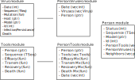

epiworld
This C++ template-header-only library provides a general framework for epidemiologic simulation. The main features of the library are:
- Four key classes:
Model,Person,Tool, andVirus. - The model features a social networks of
Persons. Personscan have multipleToolsas a defense system.Toolscan reduce contagion rate, transmissibility, death rates, and improve recovery rates.Virusescan mutate (generating new variants).Modelscan feature multiple states, e.g.,HEALTHY,SUSCEPTIBLE, etc.Modelscan have an arbitrary number of parameters.- REALLY FAST About 6.5 Million person/day simulations per second.

Hello world
Here is a simple SIRS model implemented with
And you should get something like the following:
Which took about 0.280 seconds.
Tools
Contagion
Susceptible individuals can acquire a virus from any of their infected connections. The probability that susceptible individual i gets the virus v from individual j depends on how three things:
- The transmissibility of the virus,
,
- The contagion reduction factor of
i,, and
- The host's transmission reduction factor,
.
The last two are computed from and
's tools. Ultimately, the probability of
getting virus $v$ from
equals:
Nonetheless, the default behavior of the simulation model is to assume that individuals can acquire only one disease at a time, if any. This way, the actual probability is:
The latter is calculated using Bayes' rule
Where
This way, viruses with higher transmissibility will be more likely to be acquired when competing with other variants.